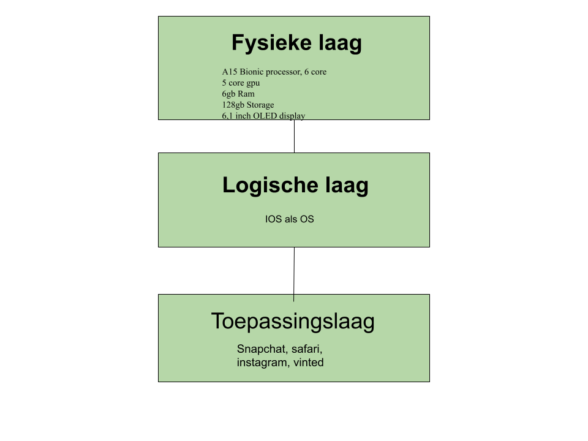

Over het 3-lagen model
Het 3-lagen model van de computer bestaat uit drie lagen: de fysieke laag, de logische laag en de toepassingslaag. Elke laag heeft zijn eigen taak en bouwt voort op de vorige laag. Samen zorgen deze lagen ervoor dat je computer werkt zoals hij hoort.
